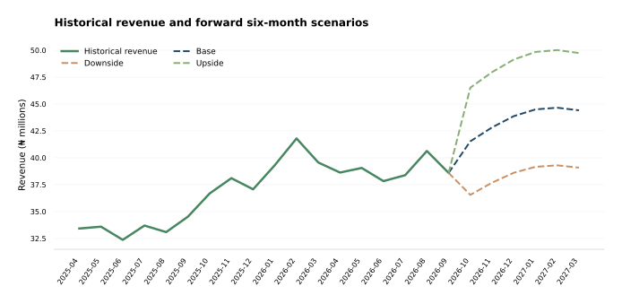

01 / Business question
How can finance teams anticipate liquidity changes and evaluate downside exposure before planning commitments?
A structured finance model combining operating performance, a chronological revenue backtest and transparent six-month cash scenarios.
02 / Analytical approach
- Generate 36 simulated months of revenue, variable costs, fixed costs and cash movements.
- Fit a seasonal-trend regression to the first 30 months, reserving the last six for backtesting.
- Refit the forward-looking model and project six additional months.
- Create downside, base and upside revenue scenarios; translate them into EBITDA and ending cash.
03 / Results from generated data
The time-based holdout generated revenue MAE of ₦764.9k. With assumed revenue multipliers of 0.88 and 1.12, month-six cash spans ₦382.92m to ₦419.63m. The range illustrates sensitivity to assumptions, not uncertainty bounds.

04 / Recommended actions
- Update assumptions when actual receivables and payables are known.
- Use a short-term 13-week rolling cash view alongside longer-range scenarios.
- Compare forecast error with a naive seasonal baseline before model adoption.
05 / Limitations
All history and future periods are simulated. Cash timing, margin assumptions and seasonality may not resemble any real organisation.